7. Atrapar manzanas¶

En esta práctica vamos a programar un juego que consiste en atrapar manzanas con el gato y evitar los rayos que matan. El gato se moverá con las teclas derecha e izquierda. Cuando el gato pierda sus tres vidas, el juego se acabará.
Iniciamos el editor de Scratch.
Cambiaremos el fondo del escenario a un desierto.
Pulsamos el botón de Fondo nuevo.
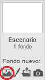
A continuación pulsamos en Tema Naturaleza.
Luego seleccionamos el fondo Desert.
La pantalla quedará de la siguiente manera.

Ahora debemos pulsar sobre el gato para realizar su programa. El icono del gato debe estar seleccionado.

Pulsando en la letra i dentro del icono gato, podemos cambiar su nombre.
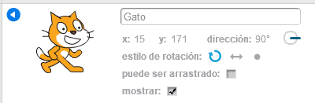En la pestaña programas del gato crearemos una nueva función llamada Inicio
Primero pulsamos en el botón más bloques

A continuación pulsamos en crear un bloque 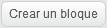
Luego cambiamos el nombre del nuevo bloque a Inicio

Por último pulsamos el botón OK
Ahora crearemos la variable Vidas.
Dentro de la pestaña Datos
 ,
,pulsamos crear una variable
Cambiamos el nombre de la variable a Vidas
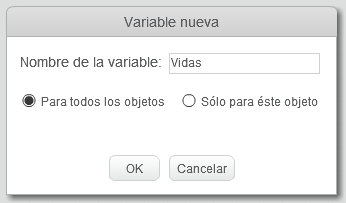Por último pulsamos el botón OK
Esta variable va a almacenar las vidas que aún tiene el gato. Cuando su valor llegue a cero, el gato morirá.
Ahora escribiremos el bloque de Inicio.
Primero pulsamos en el botón más bloques
A continuación pulsamos en crear un bloque
Luego cambiamos el nombre del nuevo bloque a Inicio
Colocamos los siguientes bloques en Inicio.
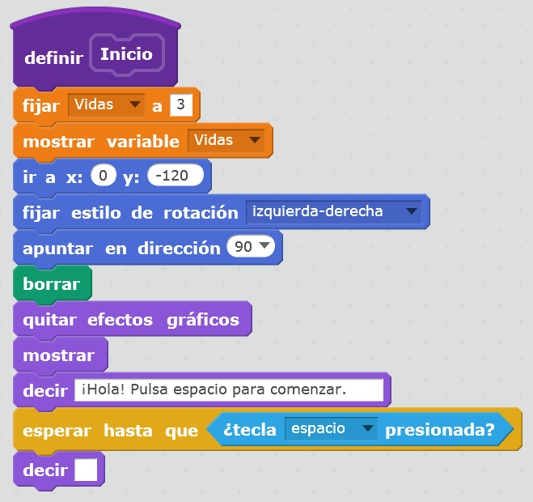Este programa le da tres vidas al gato al comenzar.
Coloca al gato en la parte baja de la pantalla, con el modo de rotación izquierda-derecha.
También borra todas las imágenes de la pantalla.
Por último espera a que se pulse la tecla espacio para continuar.
Ahora programaremos un bloque que moverá al gato a derecha y a izquierda con las teclas de dirección. El nuevo bloque se llamará Mover_gato
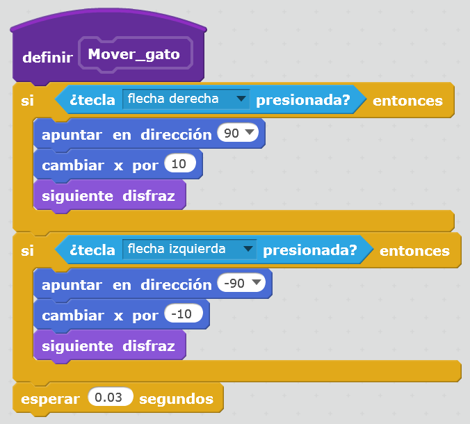Para terminar este apartado, realizaremos un pequeño programa que pondrá a prueba todo lo que hemos programado hasta el momento.

Al presionar la bandera verde
 ,
el gato esperará primero a que presionemos la barra de espacio,
a continuación el gato se moverá a izquierda y a derecha
al presionar las teclas izquierda y derecha.
,
el gato esperará primero a que presionemos la barra de espacio,
a continuación el gato se moverá a izquierda y a derecha
al presionar las teclas izquierda y derecha.
{kind=link}
{kind=link}
Programa de las manzanas¶
Advertencia
A partir de este punto, todas las instrucciones se deben añadir en la pestaña Programas del objeto manzana.
Lo primero que haremos será añadir un nuevo personaje, una manzana
Pulsamos el botón de nuevo objeto
A continuación pulsamos en Categoría Cosas.
Luego seleccionamos el objeto Apple.

Ahora crearemos una nueva variable llamada Puntos
Dentro de la pestaña Datos
,pulsamos crear una variable
Cambiamos el nombre de la variable a Puntos
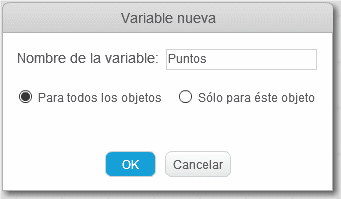Por último pulsamos el botón OK
Esta variable contará los puntos que acumula el personaje del juego.
El gato ganará un punto cada vez que atrape una manzana y perderá dos puntos si la manzana cae al suelo.
Ahora añadimos un nuevo mensaje llamado Iniciar
Pulsamos el botón de Eventos.
y movemos a programas el bloque "al recibir mensaje1".
Pinchando en la flecha, seleccionamos nuevo mensaje...
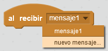
Nombramos el nuevo mensaje como Iniciar.
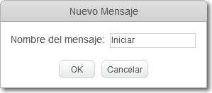Por último pulsamos el botón OK
Este mensaje servirá para avisar a las manzanas de que pueden empezar a caer después de que se presione la tecla espacio.
También borra los puntos para iniciar la partida y los muestra en la pantalla.
Ahora podemos programar las instrucciones necesarias para que caigan las manzanas al recibir el mensaje Iniciar.
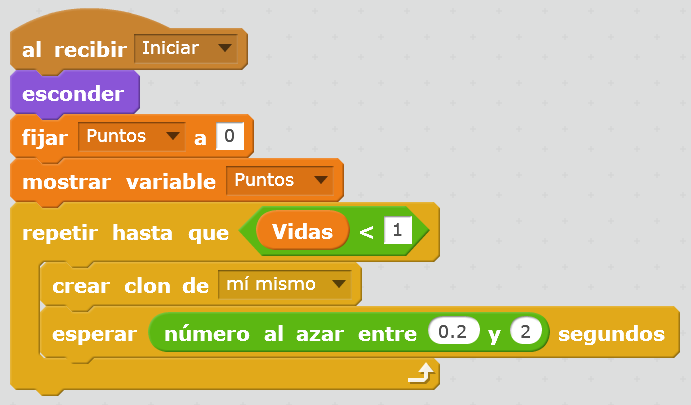El programa esconde el objeto para que no se vea en la pantalla, inicia el contador de puntos a cero, y crea copias de la manzana (clones de la manzana) cada cierto tiempo aleatorio, mientras el gato tenga vidas.
Vamos a crear otro disfraz que represente a la manzana aplastada en el suelo en el suelo.
Primero seleccionamos la pestaña disfraces
 de la manzana.
de la manzana.A continuación seleccionamos con el botón derecho del ratón sobre el disfraz de la manzana para duplicarle.

En el disfraz Apple2 recién creado, aplastamos la imagen.
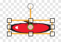En este apartado definiremos cómo se comportan los clones de la manzana. Crearemos los siguientes programas.
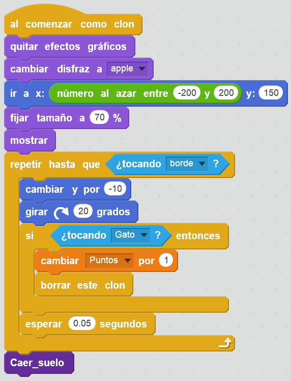 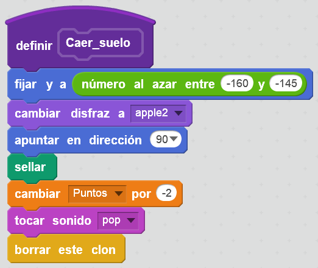La manzana se coloca en la parte superior de la pantalla y va cayendo poco a poco (cambiar y por -10) hasta que toque al gato o hasta que caiga al suelo.
Si la manzana toca al gato, aumenta los puntos y desaparece.
Si la manzana toca el suelo, se aplastara y sonará un golpe.
El programa se ha dividido en varias funciones para simplificar cada uno de los bloques.
Ahora vamos a comprobar que funcionan las nuevas instrucciones. Modificamos el programa del gato para añadir el mensaje Iniciar
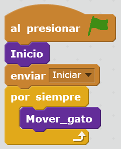En este momento, el gato podrá jugar a recoger manzanas. Debemos mover al gato con las flechas izquierda y derecha para que toque las manzanas antes de que caigan al suelo.
{kind=link}
{kind=link}
{kind=link}
{kind=link}
Programa de los rayos¶
En este apartado vamos a programar que varios rayos caigan desde lo alto y que quiten vidas al gato. De esta forma damos al juego mayor dificultad y emoción.
Advertencia
A partir de este punto, todas las instrucciones se deben añadir en la pestaña Programas del objeto rayo.
Lo primero que haremos será añadir un nuevo personaje, un rayo.
Pulsamos el botón de nuevo objeto
A continuación pulsamos en Categoría Cosas.
Luego seleccionamos el objeto Lightning.
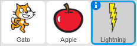Ahora vamos a programar la caída de los rayos desde la parte alta de la pantalla. Al igual que pasaba con las manzanas, caerán rayos mientras el gato tenga vidas.
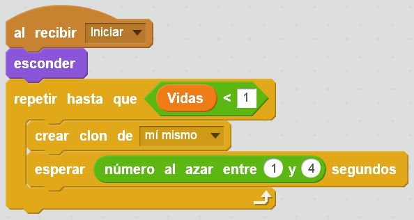Vamos a añadir un sonido nuevo al rayo, para que el gato se queje al caerle un rayo.
Seleccionamos la pestaña Sonidos 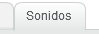 del rayo.
Pulsamos en seleccionar un sonido nuevo desde la librería
 .
.En la Categoría Animal seleccionamos el sonido meow
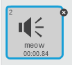Ahora debemos crear un programa para cada clon del rayo.
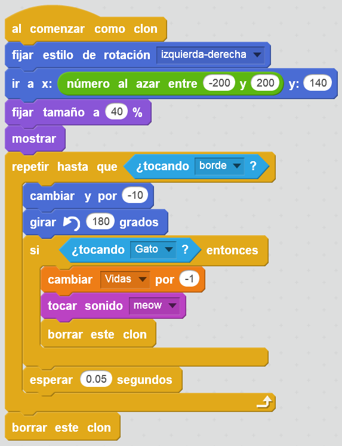Estos programas situarán a cada rayo en una posición aleatoria cada vez que se cree un clon. A continuación el rayo caerá (cambiar y por -1) hasta que toque al gato o toque el borde inferior.
Si el rayo toca al gato, le quitará una vida y se borra.
Si el rayo toca el suelo, desaparece.
Comprobaremos pulsando la bandera verde
que todo
funciona bien.
{kind=link}
{kind=link}
Muerte del gato¶
Cuando el gato pierde todas sus vidas el juego termina y dejan de caer manzanas y rayos, pero el gato sigue en movimiento. En esta sección vamos a añadir las instrucciones necesarias para que el gato parezca muerto al acabar el juego.
Advertencia
A partir de este punto, todas las instrucciones se deben añadir en la pestaña Programas del objeto gato.
Añadimos la función Gato_muere, que se ejecuta cuando el gato pierde todas sus vidas.

Y modificamos el programa del gato.
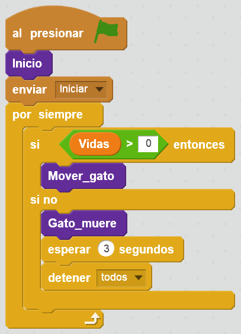En este punto, para finalizar, vamos a añadir un sonido de fondo al juego.

Prueba el juego para comprobar que todo funciona correctamente.
{kind=link}
Ejercicios¶
- Modifica el programa para que el número de rayos aumente con el tiempo, de manera que el juego se haga cada vez más difícil.